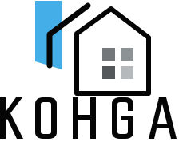

浴室のカビが毎月戻ってくる
タイル目地の奥やパッキン内部に菌糸が残っているためです。FRS工法で素材内部まで浸透除去し、防カビコーティングで長期再発を抑制します。

For Home
市販品でもクリーニングでも取れないカビは、表面ではなく素材の中に原因があります。Kohgaは根っこから菌を分解し、長期間再発しにくい住環境をつくります。
Common Problems
毎週こすっているのに戻ってくる。押入れを開けるたびに臭いが気になる。子どもの咳やアレルギーが心配。そうした生活のストレスを、原因から確認していきます。
タイル目地の奥やパッキン内部に菌糸が残っているためです。FRS工法で素材内部まで浸透除去し、防カビコーティングで長期再発を抑制します。
木材は多孔質のため、表面を拭いても内部に菌が残ります。FRS工法は木材を傷めずに内部まで除菌します。
クロスの表面ではなく、下地ボードや接着剤部分にカビが発生している可能性があります。表面を拭くだけでは根本解決になりません。
エアコン内部の熱交換器・ファンに付着したカビ菌を部屋中に送風している状態です。内部の菌まで対処する専門施工が必要です。
Safety
FRS工法で使用する洗浄剤の主成分は、食品添加物に使用される成分と同等レベルです。刺激臭が少なく、施工箇所の近くを避けていただければ在宅のまま施工できる場合があります。
Plans
カビを素材内部から分解除去した後も、結露や換気不足が続けばカビは戻る可能性があります。Kohgaでは仕上げプランまでまとめてご提案します。
PLAN 1
まず状態を改善したい方に。
PLAN 2｜最多選択
FRS-COATでカビが繁殖しにくい環境を長期維持します。
PLAN 3｜推奨
SIAA認証取得のFRS-COAT BVCで、防カビ・抗菌・抗ウイルスを同時に実現します。
Price
見積もり提示後、ご了承をいただいてから施工開始。見積もり後のキャンセルも費用ゼロです。
カビ除去のみ
含まれるもの
施工前の原因調査、特殊薬剤、浸透性施工、必要に応じたコーティング、施工後のメンテナンスカルテ発行まで含めてご提案します。
写真診断で概算と必要な施工範囲を確認できます。
無料診断で相談するFlow
FAQ
施工箇所の近くを避けていただければ、在宅のまま施工可能な場合があります。詳細は施工範囲により事前にご説明します。
防カビコーティングにより長期間の再発を抑制しますが、漏水・結露・換気不足などがある場合は再発の可能性があります。
DIYでは薬剤の濃度・浸透時間・施工技術に限界があります。FRS工法は素材内部まで対処します。
Contact
浴室・押入れ・壁紙など、気になる箇所を撮って送るだけでOKです。
公開時に正式なLINE公式URL・電話番号・メールアドレスへ差し替えてください。